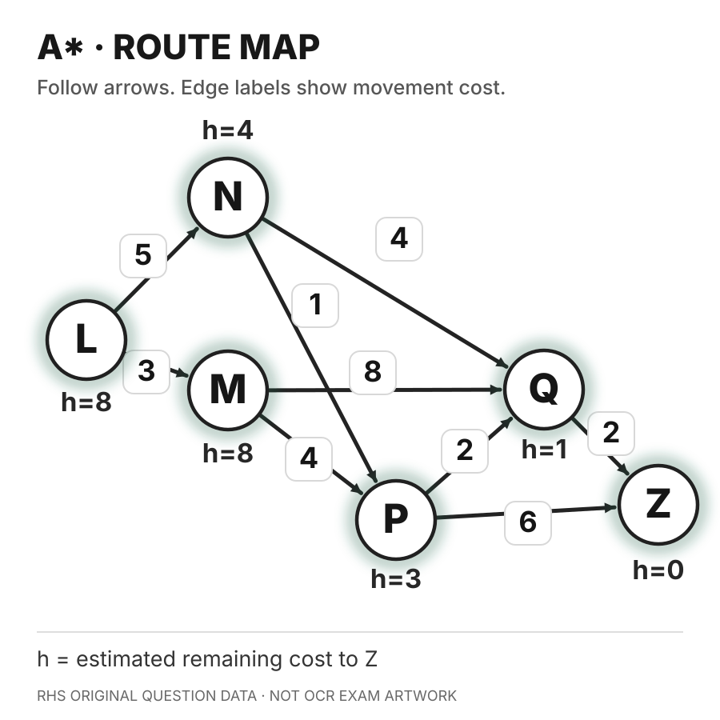
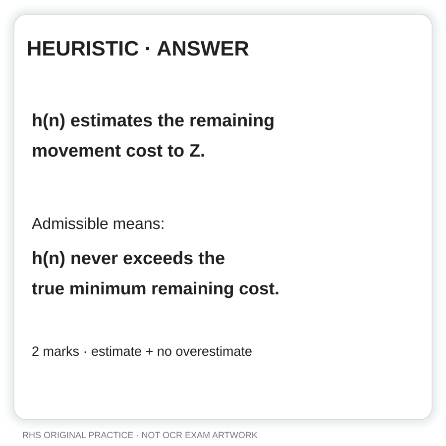
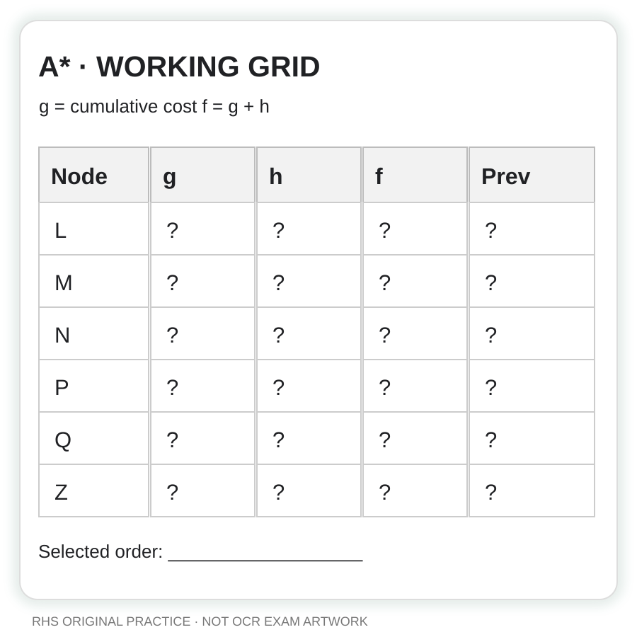
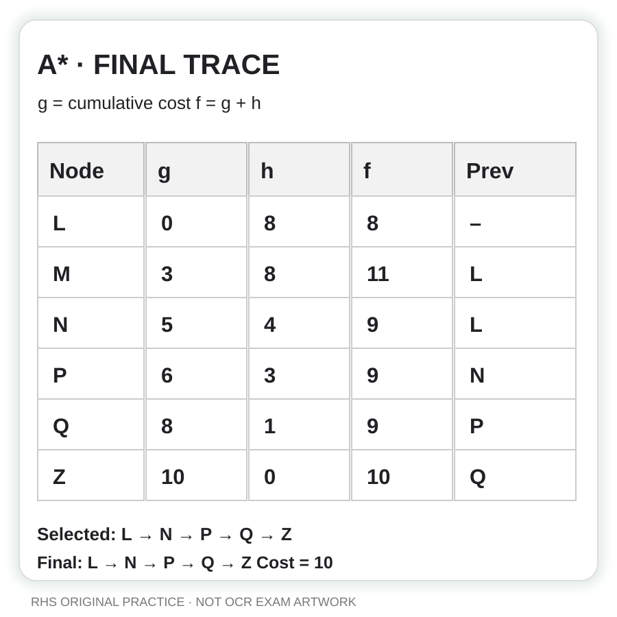

QUESTION 1 OF 2
Q1(c)(i) · Heuristic · 2 marks
For the directed museum route map, explain what h(n) estimates and the condition that makes an A* heuristic admissible.
ANSWER · MODEL
h(n) estimates remaining cost to Z; admissible means it never overestimates the cheapest remaining route cost.

QUESTION 2 OF 2
Q1(c)(ii) · A* route trace · 8 marks
Starting at L, perform A*. Record the selected nodes, best known g/h/f and predecessor values, then give the route to Z and its total cost.

ANSWER · MODEL
Selected L, N, P, Q, Z. P first reached from N at g=6. Q improves g=9 → 8 via P; Z improves g=12 → 10 via Q. Route L → N → P → Q → Z; cost 10.
